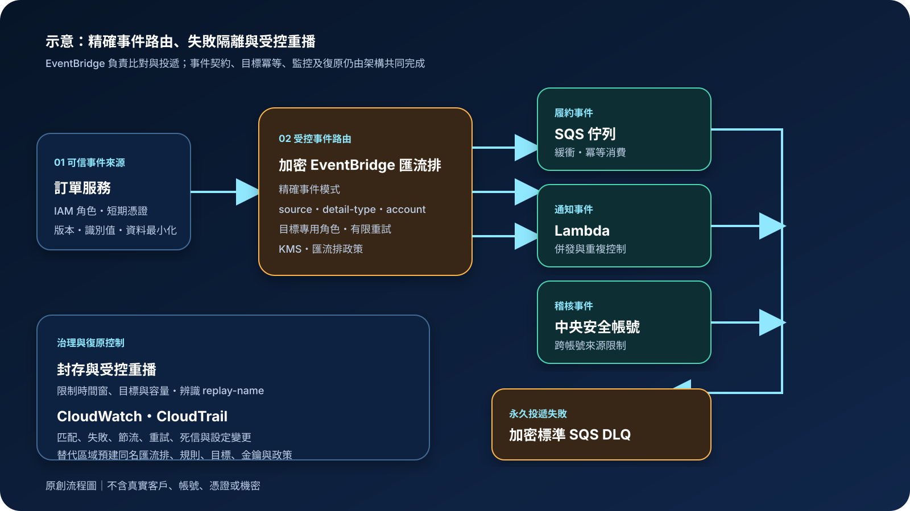

Amazon EventBridge：事件匯流排、規則與可靠路由
Amazon EventBridge 是受管事件路由服務。事件來源把狀態變更或業務事件送入事件匯流排，規則以事件模式篩選後，再將符合條件的事件送往一個或多個目標。它適合建立鬆耦合、即時反應的事件驅動架構，但不會替應用程式保證業務操作只執行一次、永久保存所有事件或自動完成完整災難復原。
作者：Dr. William｜查閱與發布：2026-09-23
服務定位
Amazon EventBridge 位於 AWS 服務、自有應用程式、軟體即服務來源與下游目標之間。事件匯流排接收事件，規則使用內容式事件模式判斷哪些事件應送往 Lambda、SQS、Step Functions、SNS、API Destination、其他事件匯流排或其他支援目標。來源不必知道所有消費者，消費者也能各自演進，因此適合跨系統事件整合與多帳號集中治理。
EventBridge 不是一般工作佇列、串流分析平台、資料庫交易日誌或多步驟工作流程引擎。需要工作者主動拉取、明確可見性逾時與積壓控制時，通常使用 Amazon SQS；需要高吞吐分區串流與長期消費位置時可評估 Amazon Kinesis；需要狀態、分支、等待、補償與人工核准時，應結合 AWS Step Functions 或其他流程引擎。
核心概念與適用邊界
主要元件
- 事件：通常由來源、事件類型、帳號、區域、時間、資源與 detail 內容組成；事件契約需要版本、唯一識別與相容策略。
- 事件匯流排：接收事件並交由規則評估。預設匯流排接收 AWS 服務事件；自訂與夥伴匯流排用於自有或 SaaS 事件及治理隔離。
- 事件模式與規則：模式只列出要比對的欄位；符合規則的事件會送往指定目標。模式過寬可能誤送、形成循環或放大成本。
- 目標：事件的目的地。每個目標都有權限、輸入轉換、容量、節流、重試與失敗語意。
- 重試與死信佇列：目標投遞可設定事件最長存留時間與重試次數；永久失敗事件可送入標準 SQS 死信佇列。
- 封存與重播：可依事件模式把事件保存於封存，並在之後重播回原始事件匯流排；重播不保證原始順序。
邊界與依賴
- 事件匯流排、規則、封存、目標設定與配額具有區域性；跨區復原需要額外架構。
- 事件符合規則不代表目標已成功完成業務交易；目標仍須處理重複、延遲、亂序與部分失敗。
- 規則可同時匹配同一事件，且單一事件可能觸發多條規則；重疊規則會增加呼叫、風險與成本。
- 事件模式採精確欄位與值比對；來源增加新事件類型或欄位時，過寬模式可能出現非預期匹配。
- 封存只接收指定匯流排與模式的事件，且事件抵達封存可能有延遲；它不等同跨區備份或不可變稽核庫。
- EventBridge 與目標之間的傳輸加密不會自動保護目標靜態資料、應用日誌或事件內不必要的敏感欄位。
適合與不適合的使用情境
適合
- AWS 服務、自有應用程式或 SaaS 事件需要依內容路由至不同下游。
- 跨帳號收集安全、營運或業務事件，並以帳號、區域、來源與事件類型精確分流。
- 新增消費者時不希望修改事件發布者，且各目標需要獨立擴縮、權限與失敗處理。
- 需要保留特定事件以便錯誤修復、功能驗證或受控重播，並可接受封存與重播的服務邊界。
不適合或不能單獨完成
- 工作必須由單一消費者取得，並需要可見性逾時、積壓深度與拉取速率控制時。
- 要求全域嚴格順序、完全一次處理或跨多個系統的原子交易時。
- 需要查詢任意歷史事件、長期分析大量串流資料，卻沒有另設資料湖、串流或稽核儲存。
- 需要複雜流程狀態、逾時、補償、人工核准與逐步可視化，但只建立事件規則時。
示意故事案例：跨帳號訂單事件的受控路由
以下為示意案例，不代表特定組織或正式部署。 一個零售平台把生產帳號的訂單服務與安全、通知、履約工作負載分開管理。訂單服務使用工作負載 IAM 角色，把最小化且具版本與唯一識別值的「訂單已確認」事件送到加密的自訂事件匯流排。事件不包含付款資料、密碼、長期憑證或可直接使用的連線資訊。
規則明確比對來源、事件類型、帳號、區域與狀態：履約事件送入 SQS 緩衝，通知事件觸發 Lambda，稽核副本送到中央安全帳號的事件匯流排。每個目標使用獨立最小權限角色與資源政策；投遞採有限重試，永久失敗事件進入加密標準 SQS 死信佇列。指定事件另存封存，消費者以事件識別值實作冪等性。CloudWatch 監控匹配、節流、失敗、重試與死信指標，CloudTrail 保存規則、匯流排、政策、目標與金鑰變更。替代區域預建同名匯流排、規則、目標與權限，並以可控事件複寫或可重播來源演練切換。

建置與運作流程
- 定義事件契約：指定來源、事件類型、版本、唯一識別值、時間、必要欄位、資料分類、大小限制與相容策略；只傳遞完成路由所需內容。
- 劃分事件匯流排：依環境、資料敏感度、業務領域與帳號邊界決定預設、自訂或夥伴匯流排，避免把所有事件集中於無差別共享平面。
- 建立發布權限：工作負載使用 IAM 角色與短期憑證，只能向指定匯流排送出必要事件；跨帳號政策限定組織、帳號、來源與允許動作。
- 撰寫精確事件模式：至少比對來源與事件類型，依需要加入帳號、區域、資源與 detail 條件；使用範例事件和負向案例測試模式。
- 設定目標與角色：每個目標只授予必要動作及資源；資源型政策限制來源規則或匯流排，輸入轉換不得加入敏感常數。
- 控制重試與死信：依業務時效設定最大事件年齡與重試次數；建立加密標準 SQS 死信佇列、來源限制、保留期、告警與重驅動程序。
- 建立封存與重播程序：只封存需要復原或驗證的事件，設定保留期、KMS 與存取角色；重播前限制目標範圍、容量與時間窗，避免重複副作用。
- 建立觀測與稽核：監控匹配事件、呼叫、失敗、節流、重試、延遲與死信，並以 CloudTrail 稽核匯流排、規則、目標、政策、封存及 KMS 變更。
- 防止循環與成本放大：使用明確狀態欄位、來源標記與規則條件，避免目標寫回後再次符合相同規則；對事件量與帳單設定異常告警。
- 設計復原：以基礎設施即程式碼建立替代區域資源，依事件來源評估全球端點、事件複寫或外部可重播來源，定期演練切換、去重與回切。
成本、可用性與維運考量
EventBridge 成本依事件類型、事件匯流排接收與跨帳號或跨區投遞、事件大小、API Destination、Pipes、Scheduler、封存處理、封存儲存與重播等項目計算。事件內容每超過計價分段可能增加計量；規則過寬、事件循環、重疊規則與不必要跨帳號路由會放大費用。KMS、SQS 死信佇列、Lambda、CloudWatch、CloudTrail、資料傳輸與替代區域資源也應納入總成本。
EventBridge 管理區域內事件匯流排基礎設施，但端對端可用性仍取決於事件來源、匯流排政策、KMS、規則、目標角色、資源政策、目標配額與下游容量。有限重試與死信佇列可保存部分投遞失敗，但無法修復錯誤事件契約、誤匹配、目標內部交易失敗或沒有冪等性的重複副作用。
封存與重播能支援區域內重新處理，但事件可能延遲進入封存，重播順序也不一定與原始接收順序相同。跨區可用性需要先確認事件來源類型與功能支援；全球端點主要用於自訂事件，替代區域仍須具備相容的匯流排、規則、目標、金鑰、政策、配額與下游資料。
Amazon EventBridge 特有資安風險與控制
- 事件匯流排政策過度開放：禁止無限制外部 PutEvents，跨帳號接收限定組織或帳號；規則同時比對 account，避免信任來源被擴大。
- 事件模式過寬：明確比對 source、detail-type、account、region 及必要 detail 欄位，建立負向測試與變更審查，防止非預期事件觸發。
- 事件循環：使用狀態、處理標記、來源與資源條件排除目標產生的後續事件，監控異常事件量、規則節流與成本。
- 目標權限過大：每條規則或目標使用專用最小權限角色；資源型政策加入來源 ARN 與來源帳號限制，避免混淆代理。
- 事件內容洩漏：禁止在事件、事件屬性、規則輸入轉換與日誌中放入密碼、Token、Access Key、Secret Key、cookie 或不必要個資；需要引用時使用不可直接取用的識別值。
- KMS 權限中斷：事件匯流排與封存使用客戶管理金鑰時，限制金鑰政策與加密內容，監控停用、刪除排程與重加密失敗；加密錯誤設定專用死信佇列。
- 死信事件無人處理：DLQ 使用標準 SQS、KMS、最小權限、保留期與告警；建立原因分類、修正、重播、去重及證據保存程序。
- 封存與重播濫用：限制 CreateArchive、StartReplay 與 KMS 權限，重播需核准範圍、時間窗、目標及容量；消費者辨識 replay-name 並維持冪等。
- 跨帳號信任錯置：事件匯流排政策、IAM 角色、組織 SCP 與規則 account 條件共同限制來源；中央帳號不應無差別接受所有事件。
- 長期身分資訊外洩：人員使用聯合登入、MFA 與短期憑證，工作負載使用 IAM 角色；API Destination 等連線機密由受管連線及 Secrets Manager 保護。
- 監控盲區：CloudWatch 指標屬近即時觀測而非完整會計；結合 CloudTrail、目標端日誌、業務完成狀態與死信盤點建立端對端證據。
- 區域故障後無法路由：以基礎設施即程式碼保存匯流排、規則、目標、政策與金鑰設定，預建替代區域並演練事件複寫、重播、去重與回切。
共同責任邊界
AWS 負責 EventBridge 受管服務及底層雲端基礎設施的安全、維護與區域內服務運作。客戶負責事件內容與分類、事件契約、事件匯流排及資源政策、IAM 與 KMS、事件模式、目標角色、輸入轉換、重試、死信、封存、重播、監控、成本控制與跨區復原架構。
客戶仍須落實 IAM 最小權限、人員 MFA 與短期憑證、帳號與網路隔離、公開存取盤點、KMS 加密、Secrets Manager／Parameter Store 管理下游設定、CloudTrail／CloudWatch 觀測，以及事件來源、業務完成狀態與基礎設施的備份及跨區復原。AWS 不會替客戶判斷事件是否合法、確認下游交易成功、消除重複副作用，或保證事件封存等同完整業務資料備份。
上線前可執行檢查清單
- □ 事件契約含來源、事件類型、版本、唯一識別值與相容策略，且沒有不必要敏感資料。
- □ 預設、自訂與夥伴事件匯流排已依環境、領域、資料分類與帳號邊界分工。
- □ 發布者使用 IAM 角色與短期憑證，只能向指定匯流排送出必要事件。
- □ 人員使用聯合登入、MFA 與短期憑證；規則、政策、目標、封存與金鑰管理權限已分離。
- □ 事件匯流排政策沒有匿名或廣泛外部存取，跨帳號來源受組織或帳號條件限制。
- □ 每條規則至少精確比對 source 與 detail-type，並依風險加入 account、region、resource 與 detail 條件。
- □ 所有事件模式已用正向、負向、缺少欄位、版本變更與非預期來源案例測試。
- □ 已檢查規則重疊與事件循環，事件量、節流與成本異常會觸發告警。
- □ 每個目標使用最小權限角色或資源政策，來源 ARN、來源帳號與 KMS 權限均已驗證。
- □ 重試次數與最大事件年齡符合業務時效，永久失敗事件會進入加密標準 SQS DLQ。
- □ DLQ 設有保留期、深度與投遞失敗告警，並有分類、修正、重驅動與去重程序。
- □ 消費者能處理重複、亂序、延遲、部分成功與重播事件，業務副作用具冪等性。
- □ 事件匯流排與封存的 KMS 選項、金鑰政策、停用風險及加密錯誤 DLQ 已測試。
- □ API Destination 或下游連線資訊由受管連線與 Secrets Manager／Parameter Store 管理，未寫入事件或程式碼。
- □ CloudWatch 監控匹配、呼叫、失敗、節流、重試、延遲與死信指標。
- □ CloudTrail 集中保存 EventBridge、IAM、資源政策與 KMS 管理事件，高風險變更會告警。
- □ 封存範圍、保留期、權限與費用已確認；重播有核准、容量保護、目標限制及回復程序。
- □ 替代區域的匯流排、規則、目標、政策、金鑰、配額與下游已建立並完成切換演練。
- □ 已估算事件量與大小、跨帳號或跨區投遞、封存、重播、KMS、DLQ、監控及資料傳輸成本。
AWS 官方一手來源
- Event buses in Amazon EventBridge（查閱：2026-09-23）
- Rules in Amazon EventBridge（查閱：2026-09-23）
- Event pattern syntax（查閱：2026-09-23）
- Best practices for EventBridge event patterns（查閱：2026-09-23）
- Event bus targets in Amazon EventBridge（查閱：2026-09-23）
- Using dead-letter queues to process undelivered events（查閱：2026-09-23）
- Archiving and replaying events in Amazon EventBridge（查閱：2026-09-23）
- Encrypting EventBridge event buses with AWS KMS keys（查閱：2026-09-23）
- Sending and receiving events between AWS accounts（查閱：2026-09-23）
- Monitoring Amazon EventBridge（查閱：2026-09-23）
- Logging Amazon EventBridge API calls using AWS CloudTrail（查閱：2026-09-23）
- Making applications Regional-fault tolerant with global endpoints（查閱：2026-09-23）
- Amazon EventBridge pricing（查閱：2026-09-23）
- AWS Well-Architected Security Pillar｜Shared responsibility（查閱：2026-09-23）
內容說明
本文依查閱日可用的 AWS 官方文件整理，作為基礎學習與架構討論材料；實際部署仍須依最新功能、區域支援、價格、配額、組織政策、資料分類、法規及復原演練結果調整。